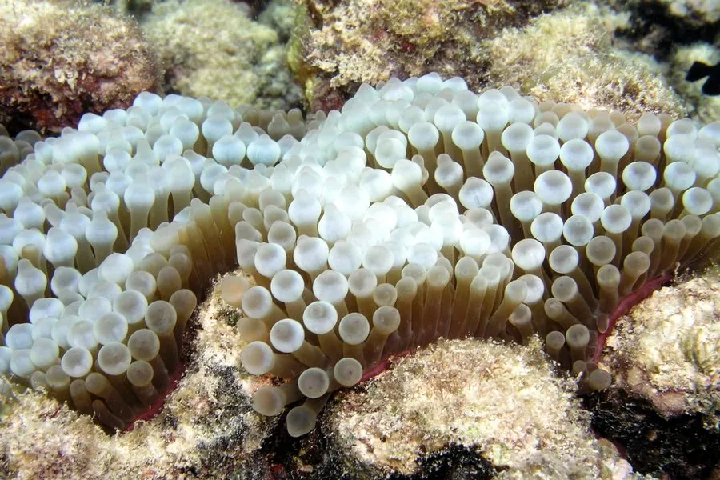

其他无脊椎动物 · 动物界
奶嘴海葵 Entacmaea quadricolor

触手末端膨大如奶嘴的海葵，与多种小丑鱼形成互利共生，是热带珊瑚礁和海水观赏水族中的常见物种。
- 分类
- 门刺胞动物门纲珊瑚纲目海葵目科海葵科属奶嘴海葵属
- 栖息环境
- 热带珊瑚礁与岩礁区，常附着在礁石缝隙和浅水区
- 地理分布
- 印度洋—西太平洋，从红海到日本南部和澳大利亚
- 保护级别
- 暂无评估
物种志
奶嘴海葵是单体海葵，口盘直径约 5–15 cm，触手众多，末端膨大成球状或泡状，形似奶嘴。体色随光照和体内共生藻而变化，可从红色、绿色到褐色，基部附着在礁石上，触手可多达数百条，随水流轻轻摆动。
它体内有虫黄藻，靠藻类光合作用获得大部分营养，同时也捕食浮游动物。奶嘴海葵与小丑鱼互利共生：小丑鱼获得庇护，海葵则得到清洁和招引猎物。它可通过纵裂进行无性繁殖，也能有性繁殖。奶嘴海葵分布于印度洋—西太平洋珊瑚礁，从红海到日本南部和澳大利亚都能见到，为多种珊瑚礁鱼类提供栖息地，也是海水观赏水族最常见的海葵之一，饲养需要较强光照和稳定水质。
形态与习性
- 食性靠体内虫黄藻光合作用供能，也捕食浮游动物
- 体型口盘直径约 5–15 cm，触手末端膨大如泡
- 共生与小丑鱼等鱼类互利共生
- 繁殖可纵裂无性繁殖，也可有性繁殖
- 分布印度洋—西太平洋珊瑚礁
- 水族常见海水观赏海葵，需要较强光照
趣味知识
- 奶嘴海葵触手末端的球状膨大，是它最明显的识别特征。
- 它体内住着虫黄藻，靠藻类光合作用获得大部分营养。
- 小丑鱼体表的黏液能避免海葵刺细胞蜇伤，因此可安全住在触手间。